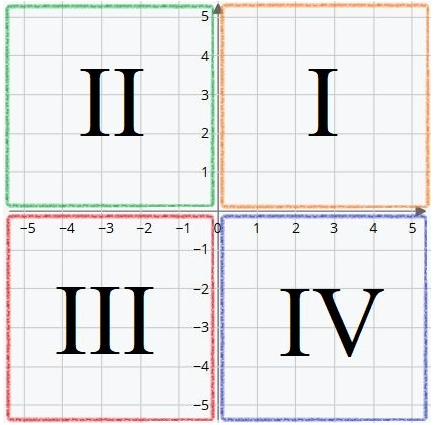

MATEMÁTICA
Profesor de curso: Jose Cardozo
Sistemas de Coordenadas Cartesianas
Cuando jugamos a los barcos, decimos una letra para la posición vertical y un número para la horizontal, y así tratamos de encontrar los barcos de nuestro rival. Cuando jugamos a los barcos estamos utilizando coordenadas cartesianas.
Coordenadas cartesianas es el nombre que se da al sistema para localizar un punto en el espacio. En usualmente trabajamos las coordenadas cartesianas en espacios de dos dimensiones, los planos, pero podemos dar coordenadas cartesianas en espacios de tres o más dimensiones. El “apellido” de las coordenadas cartesianas es un homenaje al filósofo y matemático de René Descartes.
Un sistema de coordenadas cartesianas está formado por dos rectas perpendiculares graduadas a las que llamamos ejes de coordenadas. Se suele nombrar como X el eje horizontal e Y al eje vertical. Estos dos ejes se cortan en un punto al que se le denomina origen de coordenadas, O.
Otro nombre que reciben los ejes de coordenadas es el de abscisas para el eje X (horizontal), y ordenadas para el eje Y (vertical). Cuando queremos saber cuáles son las coordenadas de un determinado punto (al que nombramos generalmente con letras mayúsculas P, Q, R… o A, B, C… debemos tener en cuenta que se colocan así:
(abscisa, ordenada)
El origen siempre está situado en las coordenadas (0,0). Es decir, está lo más a la izquierda y abajo posible. O es un punto especial, desde él comienzan los ejes de coordenadas y está “0 posiciones a la derecha y 0 posiciones arriba”. Éste es el punto desde el que se empieza a contar. Entonces (0,3) estaría 0 posiciones a la derecha y 3 arriba. Y (5,0) 5 posiciones a la derecha y 0 arriba.
Por ejemplo, un avión azul en las coordenadas (3,2) ¿Dónde se localizaría?
La primera coordenada nos indica la posición en el eje X. Hay que contar 3 posiciones desde el origen hacia la derecha. Y la segunda coordenada la posición del eje Y, contar 2 posiciones hacia arriba. Así situamos al avión azul 3 posiciones a la derecha del origen y 2 hacia arriba.
Cuadrantes: En el sistema de coordenadas cartesianas en dos dimensiones (plano) los ejes (X e Y) se cortan perpendicularmente en el origen (O). Dividen al plano en 4 regiones:

I. X positiva significa que la posición está a la derecha del origen. Y positiva que está por encima del origen.
II. X negativa indica que la posición está a la izquierda del origen. Y positiva que está por encima del origen.
III. X negativa indica que la posición está a la izquierda del origen. Y negativa que está por debajo del origen.
IV. X positiva indica que la posición está a la derecha del origen. Y negativa que está por debajo del origen.